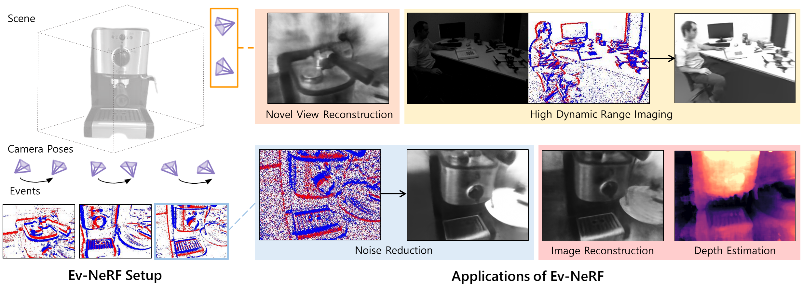
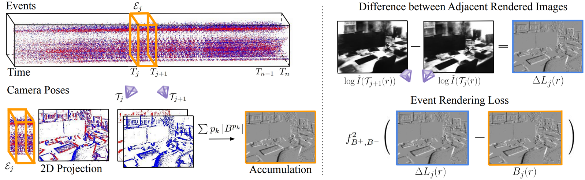

Ev-NeRF: Event Based Neural Radiance Field WACV 2023
- Inwoo Hwang
- Junho Kim
- Young Min Kim Seoul National University
Abstract
We present Ev-NeRF, a Neural Radiance Field derived from event data. While event cameras can measure subtle brightness changes in high frame rates, the measurements in low lighting or extreme motion suffer from significant domain discrepancy with complex noise. As a result, the performance of event-based vision tasks does not transfer to challenging environments, where the event cameras are expected to thrive over normal cameras. We find that the multi-view consistency of NeRF provides a powerful selfsupervision signal for eliminating spurious measurements and extracting the consistent underlying structure despite highly noisy input. Instead of posed images of the original NeRF, the input to Ev-NeRF is the event measurements accompanied by the movements of the sensors. Using the loss function that reflects the measurement model of the sensor, Ev-NeRF creates an integrated neural volume that summarizes the unstructured and sparse data points captured for about 2-4 seconds. The generated neural volume can also produce intensity images from novel views with reasonable depth estimates, which can serve as a high-quality input to various vision-based tasks. Our results show that Ev-NeRF achieves competitive performance for intensity image reconstruction under extreme noise and high-dynamic-range imaging.
Video
Overview

The input to Ev-NeRF is the stream of event data obtained from an event sensor moving around a static scene. The stream data is accompanied by a sequence of the sensor’s intermediate positions which are time-stamped. Ev-NeRF learns the implicit volume with the raw event output of the sensor and serves as a solution for various event-based applications, such as novel-view intensity image reconstruction, noise reduction, high dynamic range imaging, intensity image reconstruction, and depth estimation.
Event Rendering Loss

Ev-NeRF is trained with a loss function that incorporates the sensor movement and the resulting events triggered by the difference of brightness. According to the measurement model of the sensor, the events accumulated during a short time interval and its reflect the difference in brightness. Using the implicit volume, we render intensity frames from the view points of two adjacent event camera poses and calculate difference in the intensity of adjacent rendered frames. Event rendering loss is the discrepancy between the accumulated event and difference in the intensity of adjacent rendered frames.
Citation
The website template was borrowed from Michaël Gharbi and Ref-NeRF.